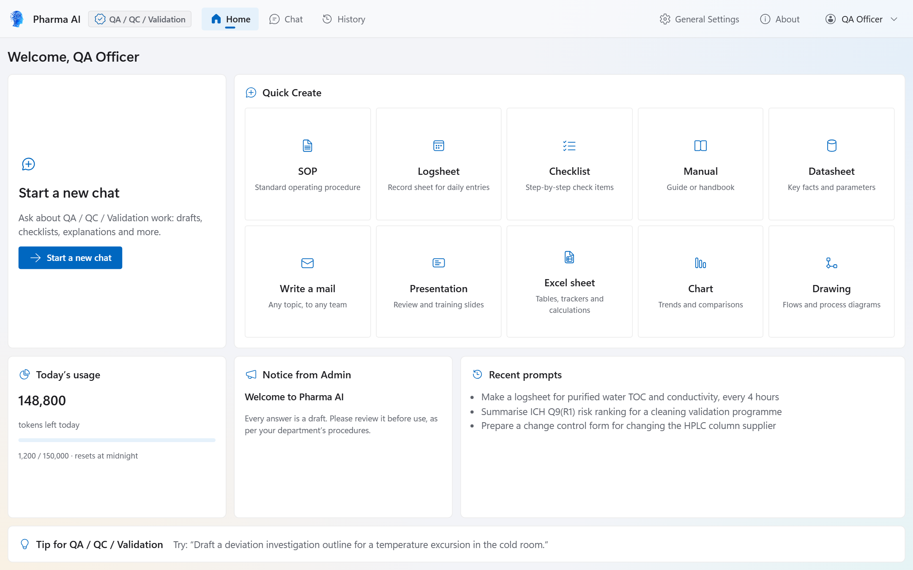
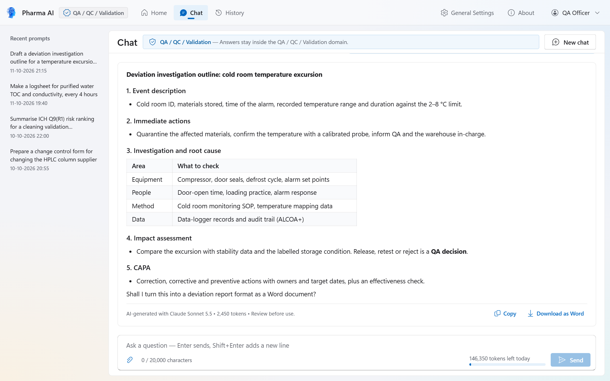
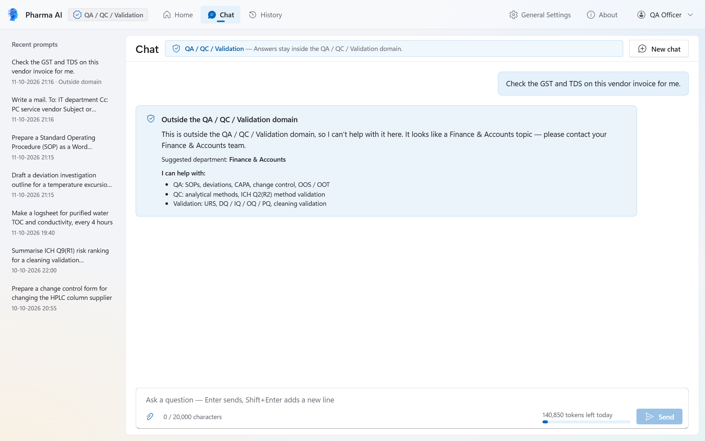
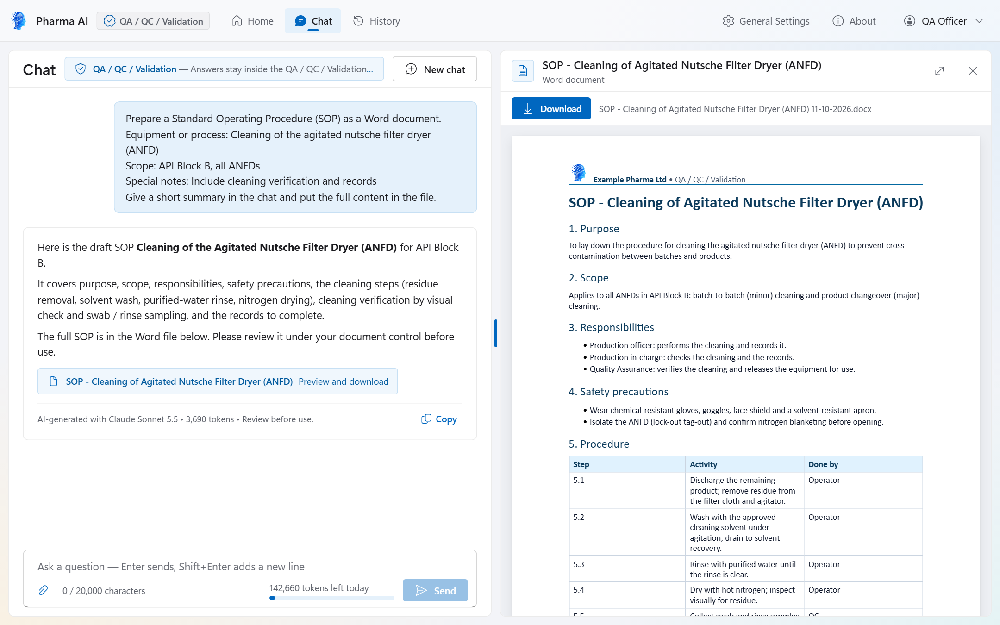
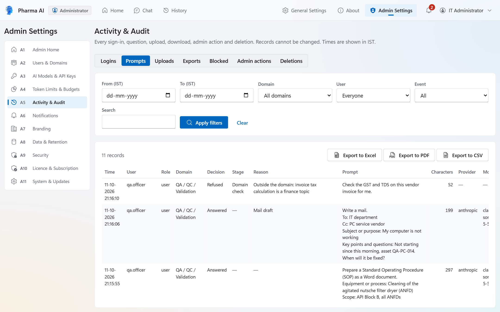
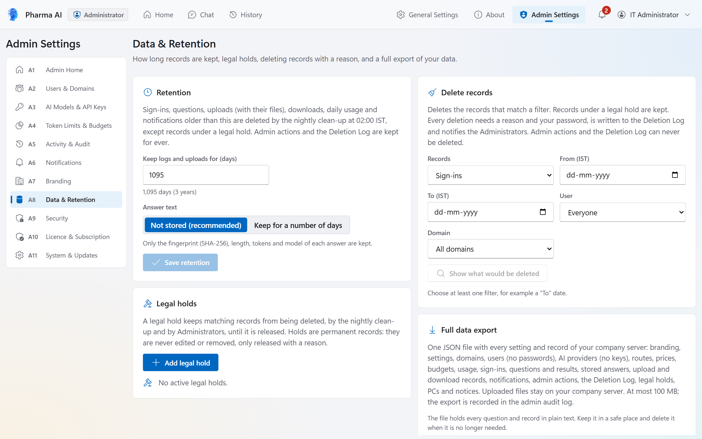

Pharma AI is a desktop AI assistant built for the complete structure of a pharmaceutical company: corporate office, manufacturing plant and common services, from QA / QC and Production to HR, Finance, Sales and IT. Each department's AI answers only questions about that department's work and drafts SOPs, logsheets, checklists, Office files and e-mails in minutes, in your company's own format. Every answer is marked “AI-generated – review before use”. Your company runs Pharma AI on its own server with its own AI key, on Windows and macOS. Start with a free 3-month trial with complete access for unlimited users and PCs.

SOPs, logsheets, checklists, manuals, datasheets, presentations, Excel sheets, charts, drawings and e-mails are drafted in minutes in your company's own format, ready for review. Word, PDF and PowerPoint files carry your company logo and name, the department, the user and the date. Your teams spend their time reviewing and approving instead of typing from scratch.
SOP, Logsheet, Checklist, Manual, Datasheet, Write a mail, Presentation, Excel sheet, Chart or Drawing.
Give the topic and the key details. The department's AI then drafts the file in the chat.
A Word, PDF, Excel, PowerPoint, chart, drawing or e-mail (.eml) draft opens in the sandboxed preview, ready to download.
Your people review and approve the draft in your own quality system. Every file is marked “AI-assisted draft – review before use”.
Corporate office, manufacturing plant and common services: all 19 standard departments work in one controlled system. Its functions are built on 21 CFR Part 11 and EU GMP Annex 11 requirements, and your company validates Pharma AI for its intended use with our complete supplier validation pack.
Functions built on 21 CFR Part 11 & EU GMP Annex 11 requirements
Part 11-ready controls: append-only audit trail, role-based access, password re-authentication
Designed to support ALCOA+ data integrity and GAMP 5 guidance
Human in the loop: the AI never approves, signs or releases records
The FDA and EMA do not certify software for Part 11 or Annex 11: your company validates Pharma AI with our complete supplier validation pack
Your records stay on your own company server: N Automations has no account on it and cannot read it
Users get drafts to review. They never get decisions. Select a screenshot to open it full size.





The download is free. The setup wizard starts a 3-month free trial with complete access, unlimited users and PCs, and no licence key. The macOS version is one universal app for Apple Silicon and Intel Macs.
The installer is signed with N Automations' own certificate, so SmartScreen asks once. Check the file first: Get-FileHash -Algorithm SHA256 PharmaAI_Setup_1.1.0_x64.exe must show the SHA-256 above. If Smart App Control blocks it, use the Microsoft Store version.
The app has an ad-hoc signature and is not notarised by Apple, so macOS asks once (and after each update). Check the file first: shasum -a 256 PharmaAI_1.1.0_universal.dmg must show the SHA-256 above. At every start the app checks its own files.
Need help? support@nautomations.in
Pharma AI gives each department a focused AI assistant for everyday questions and drafting. Users get drafts to review. They never get decisions.
Pharma AI's functions are built on the electronic-record requirements of 21 CFR Part 11 and EU GMP Annex 11, and support ALCOA+ data-integrity principles and GAMP 5 guidance. In our clause-by-clause assessment, the controls for system access, authority checks, device checks, audit trails and record copies are assessed as supported, and step sequencing as supported where applicable. Protecting records over the whole retention period, archiving and data migration are partly supported, as explained under “About certification” below. Pharma AI has no electronic signatures, so Part 11 Subpart C does not apply, and the AI never approves, signs or releases records. Built-in controls and supplier evidence:
No. The FDA and the EMA do not certify or approve software for 21 CFR Part 11 or EU GMP Annex 11 compliance, so no software can hold an official “Part 11 certificate” or “Annex 11 certificate”. A pharmaceutical company achieves compliance by validating the system for its intended use and running it under its own SOPs and controls. N Automations supplies the complete supplier validation pack to make that fast: a User Requirement Specification with 121 requirements, a requirements traceability matrix, a software verification and validation report, and a clause-by-clause 21 CFR Part 11 / EU GMP Annex 11 Regulatory Compliance Assessment. Write to info@nautomations.in to receive it.
Its functions are built on both. In our clause-by-clause Regulatory Compliance Assessment, the Part 11 controls for limited system access (11.10 d), audit trails (11.10 e), authority checks (11.10 g), device checks (11.10 h) and record copies (11.10 b, with one stated limitation: AI answer text is kept only if your Administrator switches answer storage on) are assessed as supported, and step sequencing (11.10 f) as supported where applicable. For Annex 11, data-exchange checks (5), printed copies through exports (8.1), the audit trail (9), logical access and security controls (12.1 to 12.4) and business continuity (16) are assessed as supported. Three areas are partly supported: protecting records for the whole retention period (11.10 c; Annex 11 clause 7.1) and archiving (Annex 11 clause 17), which also depend on your company's hosting, backups and archives; and data migration (Annex 11 clause 4.8), because a restore tool for the full data export is not part of version 1.1.0. Pharma AI has no electronic signatures, so Part 11 Subpart C does not apply. Validation, training, written policies, document control, backups and the classification of your deployment remain your company's responsibility under its own quality system; the assessment gives practical guidance for each. The assessment covers Pharma AI 1.1.0 for Windows. The macOS version has the same functions and uses the same company server, but it was not assessed separately.
Pharma AI keeps your company's data under your company's control. In daily use, PCs talk only to your company server, and your company server talks to the AI provider you choose.
Pharma AI on Windows and macOS. PCs and Macs connect only to your company server, over HTTPS and WSS.
Supabase, set up automatically, or self-hosted. Accounts, records, files, settings and AI keys are stored only here.
OpenAI, Azure OpenAI, Anthropic (Claude) or Google Gemini, called only from your server with your own key.
N Automations has no account on your server and cannot read it. It receives only licence data.
The Microsoft Store listing is waiting for Microsoft certification. Store, winget and Intune installs work once the listing is live.
N Automations, Hyderabad, India. Supplier evidence for your validation is part of our documentation pack; write to info@nautomations.in to receive it.
Pharma AI is designed to support 21 CFR Part 11, EU GMP Annex 11, ALCOA+ data-integrity principles and GAMP 5 guidance. N Automations' Regulatory Compliance Assessment is an assessment, not a certificate. Pharma AI is not certified or approved by the FDA, the EMA or any other regulator or third party. Your company achieves compliance by validating Pharma AI for its intended use, supported by our documentation pack. Pharma AI is a drafting and question-answering assistant with no electronic signatures. Every output is an AI-generated draft that must be reviewed before use. The software does not make GMP decisions, and it does not approve, sign, release or certify records. Microsoft, Windows, Azure and Intune are trademarks of the Microsoft group of companies. Apple, Mac and macOS are trademarks of Apple Inc. Other product names are the property of their owners.